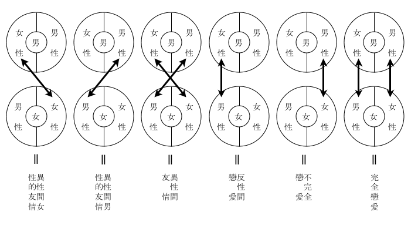

一体、友情といふものは、それ自身甚だ曖昧なもので、同性間の友情でさへ、様々な動機によつて、様々な形態を取るものである。
例へば密接に利害関係によつて結ばれた友情、精神的に何物かを与へ合ふ、所謂肝胆相照す底の友情、共通の思ひ出がなんといふことなしに、「
この関係は、非常に明瞭な場合を除いて、割合に世間は注意してゐないやうだが、よく仲のいい友達といふものは、性格が全く相反してゐるといふやうなことをいふ。その相反し方は、概ね、一定の法則に従つてゐるのである。つまり、それを一口に云へば、精神的、或は肉体的に、「にせさん」型と、「ちごさん」型になるのである。前者は、ある点で「男性的なもの」をはつきりもち、後者は、ある点で「女性的なもの」を多少もつてゐるといふことになる。
女性間に於いても、上述の関係は、逆にそのまま、通用できるらしい。
フロイドの学説めくが、友情とは、元来、性的要求の変質的現象であるとも考へられる節がある。
この結論をおし進めて行けば、異性間の友情といふ言葉は、その言葉自身殆んど無意味になるのであつて、それは恰も、木の葉の上に積る雪の如きものであり、ある木の葉は、ある程度までしか雪を支へるに堪へないのである。
甲の男性と乙の女性の間に結ばれた純粋の友情とは、一体どんなものであらうか。私は寡聞にして未だその例を見ないが、それらの男女のうち、一方が、多少でも相手に対して、恋愛らしい感情を抱いてゐる場合、又は、相方とも、さういふ感情をもちながら、何等かの理由によつて、それを表白し合はない場合は、その二人の関係を、単に友情といふ言葉で片づけることは如何であらう。
少くとも、現在では、友情以外なにものもないと断言し得る間柄でも、全く例外の場合を除いては、どちらかから、恋愛的感情をもちはじめる予想は十分につくのである。一方のさういふ感情は、自然、ある形を取つて相手の感情に呼びかける。それに応じるか応じないかは別問題である。純粋の友情は、その瞬間から複雑な心理的葛藤を伴ひ、そこから恋愛の歴史が始まるのである。
全く例外の場合とは、どんな場合かといへば、ここに、非常に女性的な男性と、非常に男性的な女性とを想像する。その非常に女性的な男性が、たまたま女性らしい女性と友情関係を結んだとする。また、非常に男性的な女性が、男性らしい男性と友だちになつたとする。この二つの場合は、普通の友情が最も保たれ易い場合であると考へて差支へない。つまり、この場合は、最も恋愛の生じ難い場合である。
凡そ人間に限らず、あらゆる動物は、異性に対つて、意識的無意識的に、「性的示威」を行ふものである。この「性的示威」が、必ずしも恋愛感情の表示にはならないが、相手のそれを目標として行はれることは明白で、これが、異性間の牽引力乃至は魅力となり、その反応の結果が、禽獣にあつては、直ちに利用されるのであるが、人間は、その点、なかなか儀礼を心得てゐる。
友情あるのみと自称する異性同士が、意識的に「性的示威」を行ふなど、以ての外であるが、これは恐らく、慎むことが至難の業であるのみならず、無意識的に行ふそれに至つては、自ら保証の限りではない。
相手が若しも、それを感じないとすれば、ここに重大な問題が起るのである。曰く、彼乃至彼女は、一方が性的魅力に欠けてゐるか、さもなければ、一方が性的感性に於いて、不具者なのである。
恋愛感情を制するといふことは、恋愛を感じないといふことではない。多少とも恋愛的感情をもつといふことは、普通、友情とはいはないのである。
そこで、異性を友だちにもつといふことは、その間に恋愛の発生を予想しなければならず、それが若し、何等かの理由によつて表面に現はれずに済むとしても、その関係は極めて不自然で、必然的にある種の「悩み」を抱き合ふことになる。その「悩み」を、互に享楽する傾向は古来、男女関係の最も進化した一面であり、軽重濃淡の別こそあれ、総ての人間が、この種の「悩み」を、果敢ない「夢」として心の一隅に潜ませてゐる。
お互に恋愛のできないやうな男女が、なんの必要から友情関係を結ぶのか、筆者にはさつぱりわからんのである。異性の友だちに求めるものはなにか。与へるものはなにか。肉体的交渉は別として、恋人同士が与へ合ふもの、夫婦同士が与へ合ふものと、どこが違ふのか。違ふとすれば恐らく、「それとはつきり云はずに」与へ合ふところ、ただそれだけである。
しかし、それは
そこで、今、二人の男女を仮定する。二人は、何かの動機で交際をはじめる。一緒に散歩をし、一緒にお茶を飲み、一緒に映画を見物し、一人が病気になれば、一方は見舞に行き、又は見舞の手紙を書き、彼は、彼女に一寸した贈物をし、彼女は、例へばそれが手袋なら、その次に会ふとき、それを手にはめて行き、夜遅くなると、彼は彼女の家の門口まで自動車で送り、彼が就職口を探してゐれば、彼女は伯父さんに彼の話をしてやり、彼女が母親と喧嘩をした話をすれば、彼は耳を傾けてその話を聴き、二人は、互に身の上話をし、抱負を語り合ひ、識つてゐる誰れ彼れを、善く云ひ悪く云ふのである。
彼が、男の友だちは酒を飲んでいかんと云へば、彼女は、女の友だちは嫉妬深くて嫌ひだと云ふのである。
この男は、必ず、女のやうに
かくの如き滑稽な例は、今日、やや増加の徴候がある。そして更に滑稽なことには、この「反性的示威」が、往々意外にも、「性的示威」と同一結果を生むに至るのである。その場合、男女間に於いて、「性的役割」の部分的転換が行はれることはいふまでもなく、モボとモガのあるものは、その典型的な標本であらうと思はれる。
この種の男女は、一般の異性に向つて、極度に、露骨に「性的示威」を行ひながら、一方、特定の異性に対しては、努めて「反性的示威」を試みる異常な風習を流行させたが、この風習はやがて、発生の起因から遠ざかつて、近代的コケツトリイの一形態を成すものと思はれる。これを「性の反性的表示」と名づけてもいいし、「恋愛の友情化」と呼んでも差支へあるまい。
ここで、恋愛心理の歴史的考察を加へれば、男女間の「性的要求」は、従来の何人も予想しなかつた複雑さを加へ、凡そ恋愛が、異性のうちに異性を求める関係は、反射的に二重の作用を行ふ時代に到達したのである。即ち、男も女も、それぞれ両性を兼ね備へ、男は、個有の「性」によつて、女の個有の「性」に対し、その「女性的副性」によつて、女の「男性的副性」に対する新法則が生れたのである。
故に、これからの男が、恋愛に於いて、単なる男性であることは、結局、女の要求を全部的に満足せしめ得ないことになる。
この事実は、将来の社会に於いて、異性間の「友情」を、ある程度まで可能ならしめることに役立つであらう。少くとも、その公算を多からしめるわけである。
試みに、男女関係を図式で示せば、左の通りである。
